今日趋势
GitHub这次没有把数千个疑似漏洞直接扔给开源项目。AI先筛，七名研究人员再逐项检查，维护者收到99份私密报告与修复建议；截至11月15日，55项已修，14项进入发行版。这是17日新公开的试点结果，扫描本身使用较早的MAI Cyber模型。数字之间的距离，记录的是人做了多少工作。
其余变化各有自己的尺度。Gemini扩大免费任务入口，跨设备协议延长会话的寿命，医院研究比较的是医生愿不愿意签署文书。模型评测、临床效果和企业收入，不能互相代替作证。本期把新发布与新分析分开说明，也把转换模型、促销价格和作者自报留在原来的语境里。
Google官方博客
Gemini任务模式向六国开放免费版
来源: Google官方博客 · 2026-11-18 · 原文链接
Google于17日宣布，Gemini任务模式开始向美国、日本、韩国、加拿大、澳大利亚和印度的用户免费推送，进阶功能先从美国展开，使用的是此前已公布的Gemini 4 Hydrogen。公司展示了致电预约、分析账单、购物和日历处理等场景：购买前按设计需要确认或预授权，也可预设硬性消费上限；部分网站仍可能交还页面让用户完成最后一步。任务在专属、硬件隔离且不与其他用户共享的虚拟机里执行。短信入口须使用符合条件的美国运营商号码，电话功能暂不支持美国五个州，不能把六国免费开放理解为所有功能同步可用。
Janet 锐评：
预约电话终于不用自己听等待音乐，这种帮助很具体。可是购物车加一盒麦片、替人刷卡买下商品、预约上门服务，承担的后果各不相同；同一个任务开关装不下所有授权。免费入口能带来更多第一次尝试，之后能否常用，还取决于失败时怎样交还页面，以及人在何处仍能接住事情。
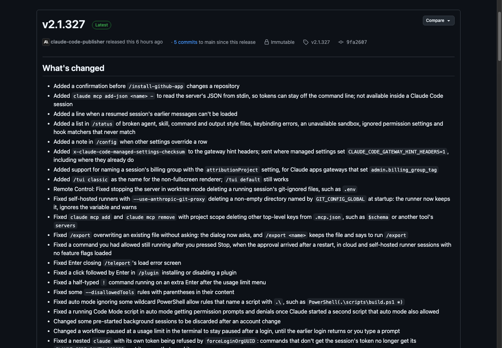
Anthropic官方GitHub Release
ClaudeCode加确认并保护续接记录
来源: Anthropic官方GitHub Release · 2026-11-18 · 原文链接
Claude Code 2.1.327于17日23:17 UTC发布。安装GitHub应用、进而修改仓库前新增确认；命令行可从标准输入读取MCP服务配置，减少令牌进入命令参数的机会，这个入口不适用于Claude Code会话内部。新版还修复Remote Control在工作树模式停服时删除运行中会话所需忽略文件的问题，并处理多种崩溃、停止和恢复后丢失消息的情况。以上来自官方发行说明，未据此宣称所有恢复问题都已消失。
Janet 锐评：
一次暂停不该把工作现场清空。保护被忽略文件、补回续接消息，修的都是下次打开时还找不找得到东西；这种改动少有演示效果，却直接影响人敢不敢中途离开。
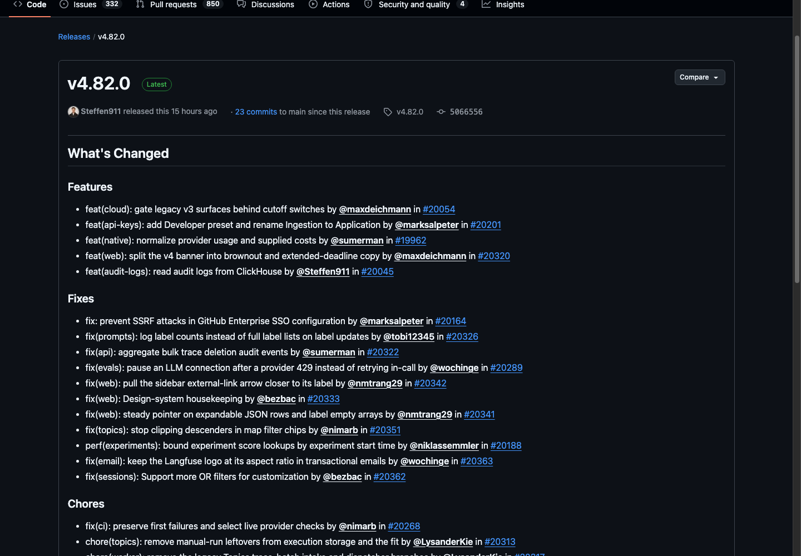
Langfuse官方GitHub Release
Langfuse新版本加入开发者权限预设
来源: Langfuse官方GitHub Release · 2026-11-18 · 原文链接
Langfuse 4.82.0于17日14:28 UTC发布，API密钥新增Developer预设，并将Ingestion命名改为Application；原生接入会统一处理提供方用量及传入成本，审计日志改从ClickHouse读取。发行说明也列出GitHub Enterprise单点登录配置中的SSRF修复，以及遇到提供方429后暂停相应LLM连接、而不在当次调用中反复重试的改动。旧v3入口另有截止开关和迁移提示，并不等于所有部署当天立即停用。
Janet 锐评：
收到429还继续原地猛试，可能把一次限流拖成排队拥堵。暂停连接是小改动，但它承认了服务端已经说“等一下”；可观测工具自己也得学会停下来。
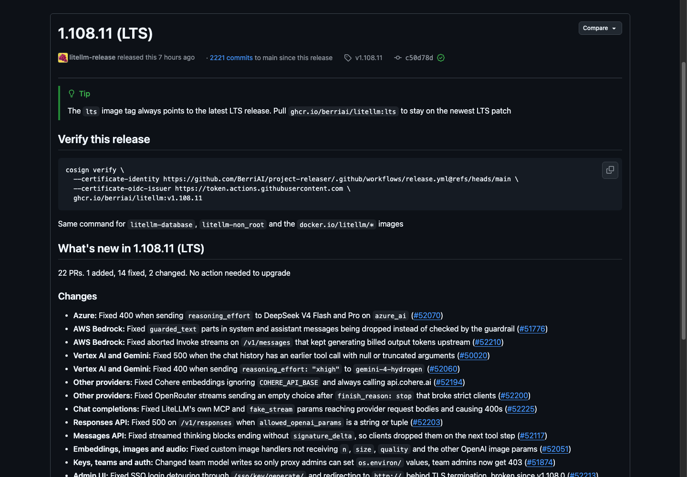
LiteLLM官方GitHub Release
LiteLLM新补丁管住停流后的生成
来源: LiteLLM官方GitHub Release · 2026-11-18 · 原文链接
LiteLLM在17日22:29 UTC发布1.108.11长期支持补丁。官方列出一项Bedrock修复：通过Messages接口中断Invoke流后，上游仍可能继续生成并计费；新版处理这一情况，也修复系统和助手消息中的guarded_text片段被丢弃而未进入护栏检查的问题。其他改动包括Gemini历史工具参数为空或截断时的错误处理，以及Azure上向DeepSeek V4 Flash、Pro发送reasoning_effort导致400响应的兼容问题。这是网关修复，不是上述模型同日发布。
Janet 锐评：
用户按下停止，屏幕静下来，账单却可能还在走。这个补丁提醒我们，界面的结束与服务端的结束是两件事。取消信号走完最后一段路，才算一次完整的停止。
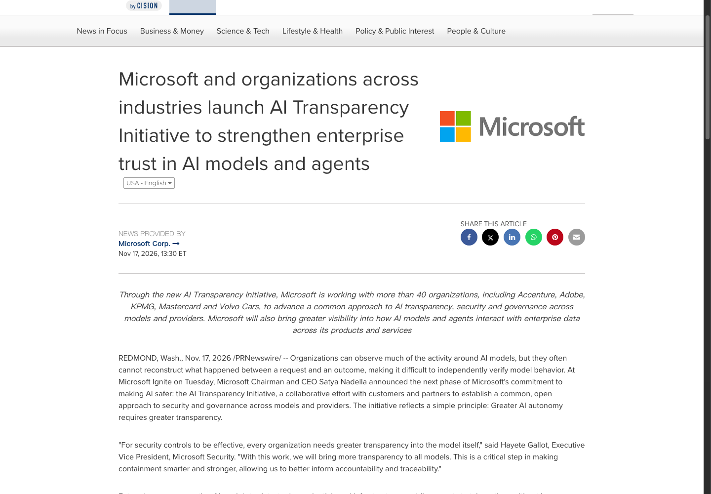
微软公司原始新闻稿
微软联同四十余机构推AI透明倡议
来源: 微软公司原始新闻稿 · 2026-11-18 · 原文链接
微软于17日13:30美东时间宣布AI Transparency Initiative，与包括Accenture、Adobe、KPMG、Mastercard和Volvo Cars在内的四十余家机构协作。倡议拟推动跨模型、跨提供方的开放标准，并将相关证据接入Microsoft AI、Foundry和Copilot。它特别区分模型自述、运行时记录和独立身份或策略系统的证据，目标是让组织能重建代理获准做什么、访问什么和实际做了什么。目前宣布的是协作方向及产品整合计划，不能当作统一标准已经定稿或所有工具已经支持。
Janet 锐评：
代理说自己只读过一个文件，和文件系统记录它读过一个文件，证据分量不同。四十余个名字说明这件事有人一起做，最终有没有用，还得看换一家模型后记录能否继续对上。
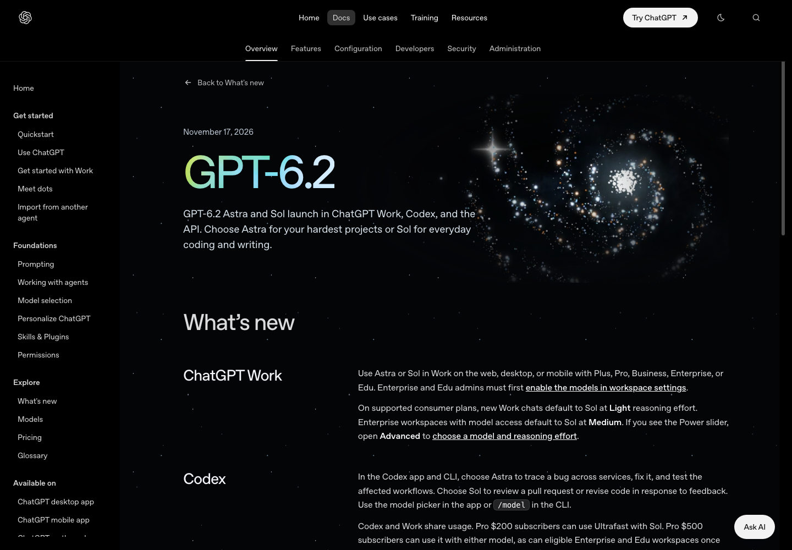
OpenAI原始发布
GPT6.2双模型上线专业工作场景
来源: OpenAI原始发布 · 2026-11-18 · 原文链接
OpenAI于17日发布GPT-6.2 Astra与Sol，分别定位高难度项目和日常工作，进入ChatGPT Work、Codex及API。官方称Astra更擅长按照模板制作文档、表格和演示稿，并提升代码与电脑操作能力。Astra API每百万令牌输入8美元、缓存输入0.40美元、输出40美元；输入与输出单价较GPT-6 Astra下降20%，缓存输入下降60%，Sol沿用6.1 Sol单价。这些价格变化不能直接等同每个任务同比例省钱。公司同时报告，两款模型在两项测试中更容易漏报缺失文件等阻塞，已在Codex加入缓解指令；企业及教育工作区的可用性仍取决于管理员启用。
Janet 锐评：
能照着模板交出一份可用文件，比再加一段漂亮解释更接近专业工作。但缺了源文件却不说，会让外观完整的交付物更难判断。新版的能力和这项已披露的短处需要一起读：成品越像那么回事，使用者越需要知道哪些材料没有拿到、哪些步骤没有完成，尤其不能把安静当成没有阻塞。
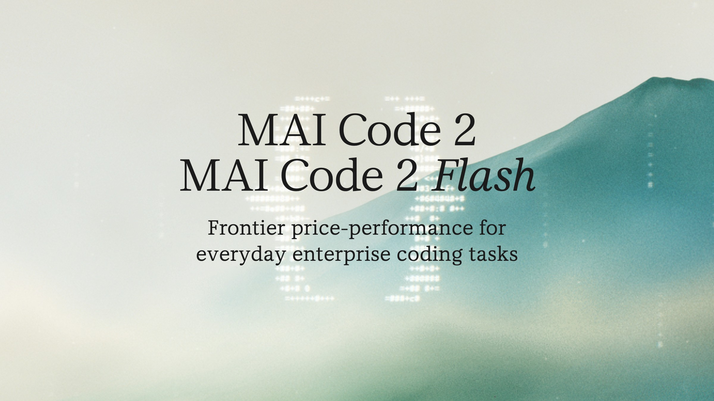
Microsoft AI原始发布
微软推出双档编码模型，价格含促销
来源: Microsoft AI原始发布 · 2026-11-18 · 原文链接
微软于17日推出MAI Code 2与Code 2 Flash。前者面向多文件实现、调试和仓库级编码，后者侧重解释、局部修改与常规修复；两者进入GitHub Copilot，Flash另在Foundry提供有限访问预览。微软自报，Code 2在四项编码基准的平均表现约为GPT-6.1 Sol的98%，成本约40%。脚注明确其成本采用五折促销价，比较还受推理强度、测试平台和任务配置影响，不能当作永久价格或全部工作负载的结论。其他分发渠道被列为后续计划。
Janet 锐评：
“四成成本”很好记，脚注里的“五折促销”更容易被忘掉。采购预算看的是长期账单，今天的评测图则用了特定价格。促销有价值，但它与模型效率不是同一种优势。
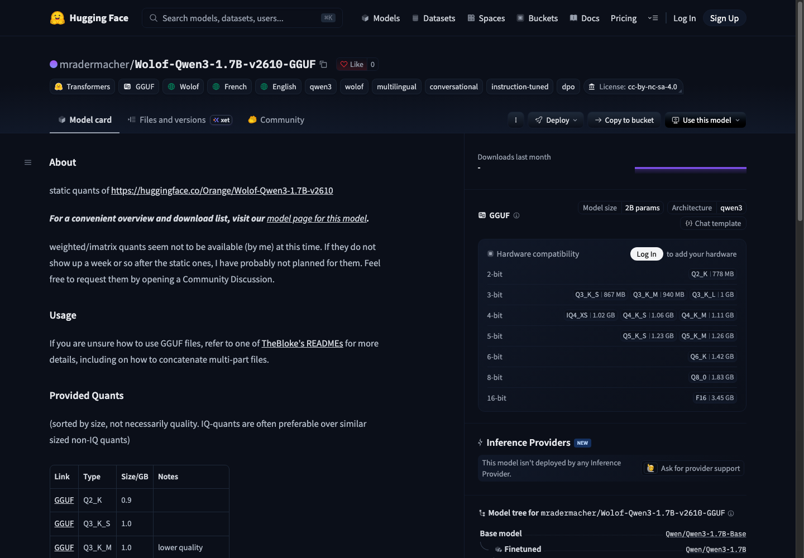
转换仓库及Orange原始模型卡
沃洛夫语微调模型新增GGUF转换
来源: 转换仓库及Orange原始模型卡 · 2026-11-18 · 原文链接
mradermacher于17日23:23 UTC建立Wolof-Qwen3-1.7B-v2610的GGUF仓库，随后在窗口内上传转换文件。这是独立量化转换版，底层是Orange基于Qwen3-1.7B做的沃洛夫语SFT与DPO适配，不是Qwen官方新基础模型。模型卡同时保留法语、英语定位，并说明部分通用能力会下降、长上下文测试有限，当前未验证无人监督的代理用途。仓库提供约1.2GB的Q4_K_M文件；该文件大小不是完整运行内存需求。许可为CC BY-NC-SA 4.0，包含非商业限制。
Janet 锐评：
小语种模型的价值常在大榜单看不到的地方：当地用户能不能用自己的语言问清一件事。GGUF降低了试跑门槛，非商业许可却仍然在；部署方便与业务可用不能画等号。
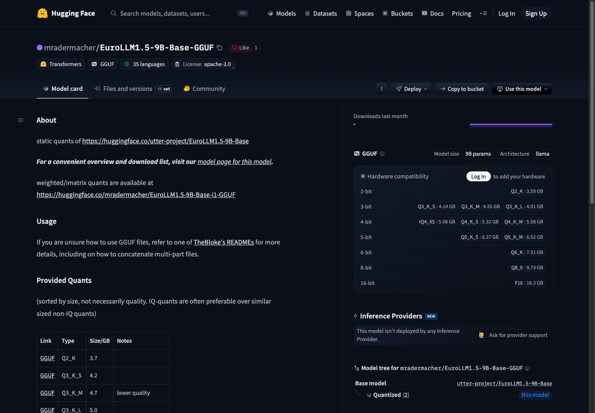
转换仓库及utter-project模型卡
EuroLLM基础模型加入GGUF格式
来源: 转换仓库及utter-project模型卡 · 2026-11-18 · 原文链接
EuroLLM1.5-9B-Base的独立GGUF转换仓库于17日11:59 UTC建立，窗口内可核对多次文件上传。它来自utter-project的9B基础模型，提供不同量化档位，例如Q4_K_M文件标注约5.7GB；这是存储大小，实际内存还要计入上下文和运行开销。原始模型卡列出多种语言及Apache 2.0许可，同时强调当前评测结果仍属初步、详细配置待发布。这里的新事件是转换文件上线，不是训练团队当天重发模型，也不是已经调好对话格式的指令助手。
Janet 锐评：
基础模型被打成方便下载的格式，仍然是基础模型。它为继续训练和本地研究多开了一扇门，但不会因为文件名多了GGUF，就自动学会怎样和用户好好聊天。
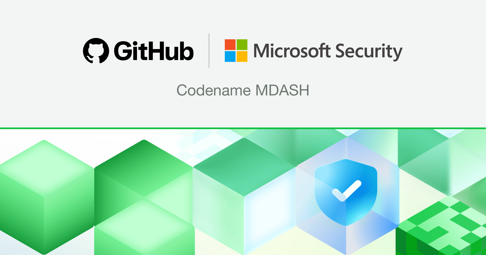
GitHub与微软试点原始复盘
GitHub安全试点给99份报告配补丁
来源: GitHub与微软试点原始复盘 · 2026-11-18 · 原文链接
GitHub于17日新公开与微软的Codename MDASH试点结果，基础扫描和修复发生得更早。六个自愿参与的开源项目先由较早的MAI Cyber模型扫描，再经GitHub代理去重筛选，七名FORGE Lab研究人员逐项人工核验，最终私密提交99份带概念验证与修复建议的报告。截至15日，维护者已修复55项，其中14项进入发行版。研究人员每个项目约投入两天，维护者保留如何修、何时发的决定权。项目包括Caddy、Express、FastMCP、AutoGPT、ImageMagick和Netty；这是小样本试点，也不是刚发布的MAI Cyber 2的测试成绩。
Janet 锐评：
数千个发现变成99份报告，减少的那一大截也是工作成果。维护者接到的是可讨论的补丁，而非又一份待办清单，这才给修复留出了时间。55项已修与14项已发又隔着一段路；用户拿到修复，需要维护者审改、测试和安排发行，扫描器把问题标红以后，事情远没有结束。
GitHub工程团队原始文章
GitHub公开跨设备会话协议的构建
来源: GitHub工程团队原始文章 · 2026-11-18 · 原文链接
GitHub在17日工程文章中介绍Agent Host Protocol，解释代理会话怎样在编辑器、应用、手机与云端之间延续。协议以URI标识的通道组织能力，服务器负责状态裁决，客户端通过动作修改状态；重连时可重放排队动作，收到确认后再确定结果。VS Code用TypeScript实现主机，GitHub用Rust，两种实现帮助发现原先只在单一客户端成立的假设。核心包含根、会话和聊天通道，终端、MCP或遥测可扩展。本文是当天新技术复盘，协议和建设工作早已开始，不代表任意第三方客户端现在都已互通。
Janet 锐评：
从手机回到电脑，最怕看到两个各说各话的进度。AHP把服务器作为状态裁决者，处理的就是这类分歧；跨端连续感的背后，得由双方明确哪一步已经被确认。
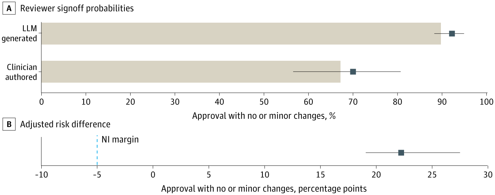
JAMA Network Open原始研究
新研究用医生签字评估出院摘要
来源: JAMA Network Open原始研究 · 2026-11-18 · 原文链接
JAMA Network Open于17日发表一项回顾性研究：12名医生对照伦敦五家医院的住院记录，评估1294份出院摘要，其中645份由GPT-4o mini生成、649份由临床人员撰写。主要终点是无需或仅需小幅修改时愿意签署的概率；调整后分别为92.2%和70.0%，差22.2个百分点，95%置信区间19.0至27.5，满足预设负5个百分点的非劣效界值。研究使用2022至2023年的历史住院资料，17日新发表，不是新模型发布。它没有前瞻评估床旁流程或患者结局；遗漏与幻觉仍存在，结论要求密切临床监督。
Janet 锐评：
医生愿意署名，是比“读起来像病历”更贴近使用的一道问题。这个研究还让评阅者回看完整住院记录，评价才有了依据。不过，能签一份摘要和病人回家后得到更好的照护，之间还有尚未测量的距离。文书可以先成为助手，患者结局仍需要在真实使用中另外回答。
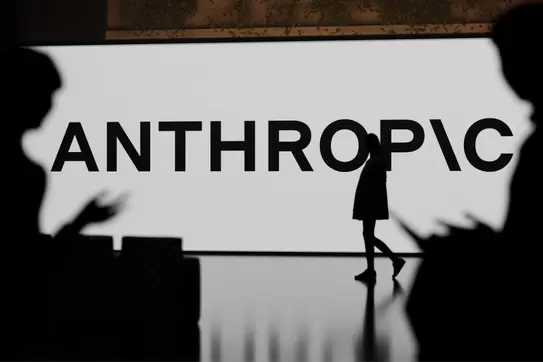
哥伦比亚商学院17日新分析
哥大教授用新分析拆解上市利润率
来源: 哥伦比亚商学院17日新分析 · 2026-11-18 · 原文链接
哥伦比亚商学院于17日刊出对两位教授的采访，重新分析Anthropic较早提交的上市材料，不能把旧申报当作当天首次IPO。会计教授Rajgopal指出，2026年上半年仅扣服务客户成本时毛利率为85%；计入训练和免费用户算力后约45%，再计全部研发约26%。这是教授按不同成本范围重算的分析，三者并非三个可以直接互换的法定毛利率。文章还指出，第三季度收入逾八成来自半年内发布的模型：迭代收入与持续研发支出需要放在一起理解。
Janet 锐评：
85%、45%、26%都能描述同一家公司，前提是把分母旁边的成本清单展开。模型隔几个月就得重做，研发就很难被当成一次性的远期投入；利润故事也会随这条边界改变。
投资与商业
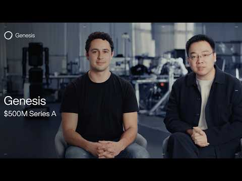
Genesis AI原始融资新闻稿
Genesis融资5亿美元扩机器人部署
来源: Genesis AI原始融资新闻稿 · 2026-11-18 · 原文链接
Genesis AI于17日09:00美东时间宣布5亿美元A轮融资，投后估值35亿美元，由Premji Invest、Khosla Ventures和Eclipse共同领投。资金用于扩大数据采集与训练、推进灵巧操作、增加Eno生产部署和招聘。公司称最初面向制造、物流、实验室等工业环境，再考虑酒店、医疗与消费场景；这些是部署顺序与目标，不等于已在全部行业规模运行。新闻稿中关于人类水平操作和长期自主工作的能力描述属于公司及投资者自报，不能作为独立可靠性测试。
Janet 锐评：
五亿美元能买来更多试验和产能，却不能替机器人熬过每天的故障。先去制造、物流和实验室，也说明部署需要具体场地与任务；“通用”最终要由一班又一班的工作积累出来。
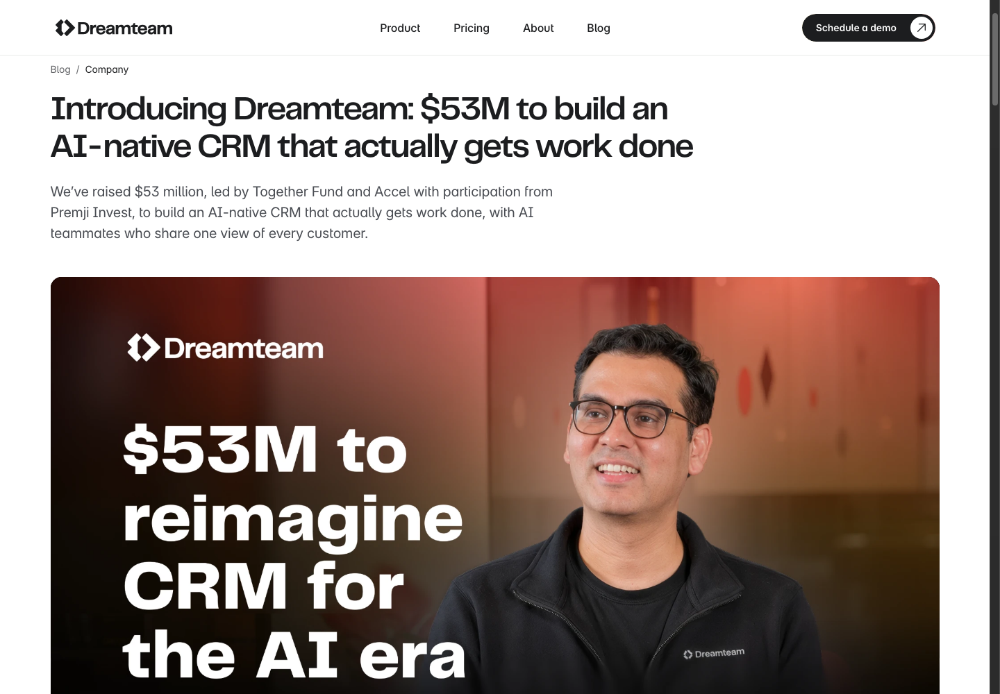
Dreamteam17日公司原始披露
Dreamteam用新披露厘清融资轮次
来源: Dreamteam17日公司原始披露 · 2026-11-18 · 原文链接
Dreamteam于17日发布公司介绍，明确5300万美元是种子轮和A轮累计融资，由Together Fund与Accel领投、Premji Invest参与，不能写成单笔A轮。基础融资消息较早，今天采用的是公司新披露的轮次口径与产品细节。其AI原生CRM包括市场分析、交易跟进、销售管线和系统配置四个助手，共享来自电话、邮件与会议的客户信息。公司自报已有13国逾100家企业使用，并明确邮件发送需人批准、团队决定委托范围。这些采用数字及功能效果尚非独立测量。
Janet 锐评：
CRM最烦的常常是大家又要解释一次客户发生了什么。共享记忆确实对准了这个痛点，发送邮件保留人工批准也很实在。至于5300万美元，轮次写清楚，读者才能判断融资所处阶段。
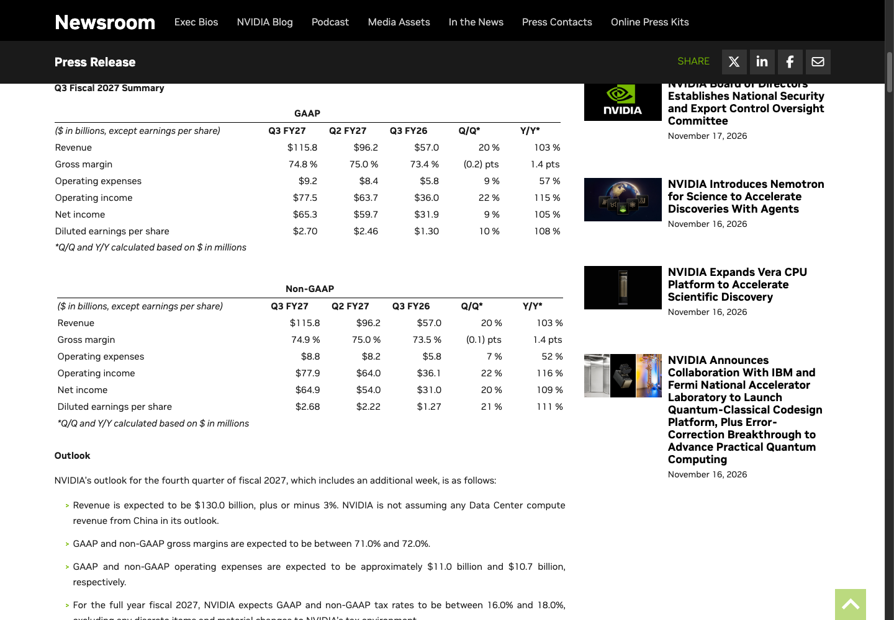
英伟达原始季度财报
英伟达季度收入涨至1158亿美元
来源: 英伟达原始季度财报 · 2026-11-18 · 原文链接
英伟达于17日公布2027财年第三季度业绩，季度截至2026年10月25日：收入1158亿美元，环比增20%、同比增103%；数据中心收入1076亿美元，同比增110%。GAAP毛利率74.8%，GAAP净利润653亿美元。公司预计下一季度收入1300亿美元、上下浮动3%，并特别注明该季度多一周，指引未假设来自中国的数据中心计算收入。后两项是前瞻假设，不是已实现业绩；财年名称也不能误读成2027年日历季度。
Janet 锐评：
1158亿美元是已经确认的季度收入，比订单口号更硬，但还不能替客户回答投资回报。下季多一周，也会影响环比比较；中国收入未计入则说明指引用了什么假设。读这种体量的财报，增长幅度之外，日期、确认口径和预计范围同样会改变我们对速度的理解。